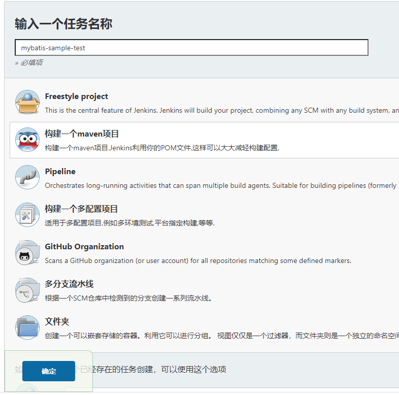
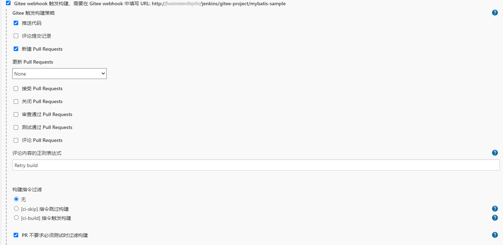
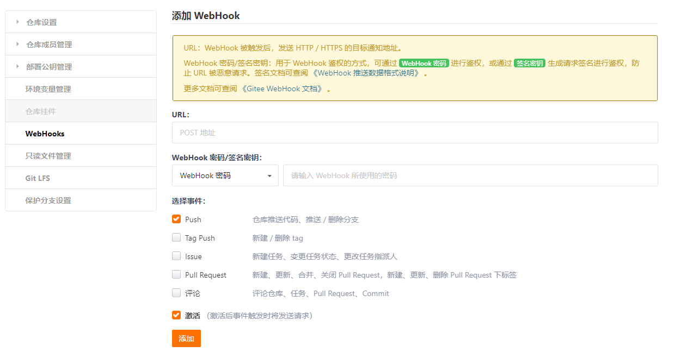
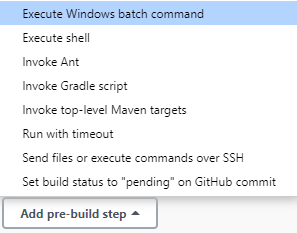
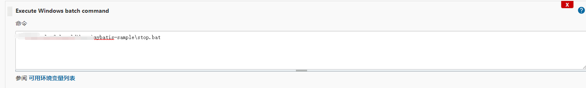
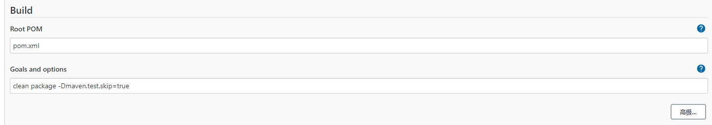
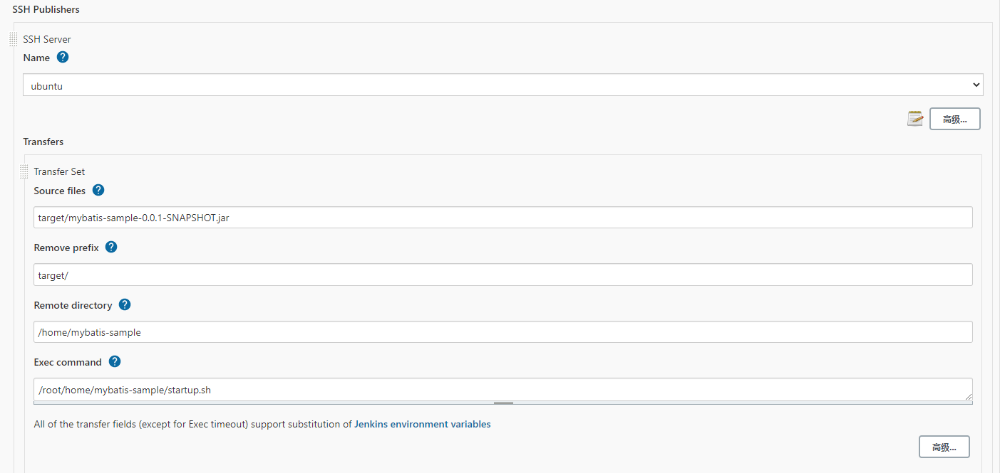
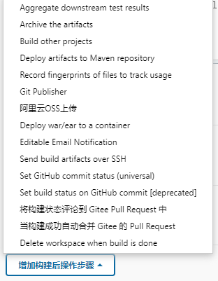
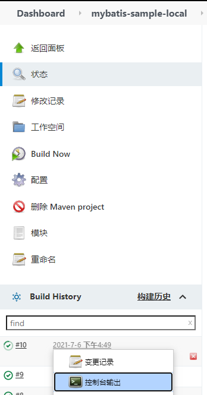
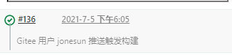

windows上使用jenkins构建并部署springboot项目
创建任务
在安装并配置好Jenkins后，我们来构建并部署springboot项目
创建任务首先准备一个SpringBoot项目上传到上面凭据所在的git托管网站中，以便Jenkins可以正常拉取源码
新建Item-选择【构建一个Maven项目】(如果这里没有这个选项，回到上篇安装插件Maven Integration并重启Jenkins)

JDK
选择该项目构建时的Java版本(如果这里没有所需的版本，回到上篇配置配置JDK、Maven、Git环境，新增即可)
源码管理中
选择Git，填写仓库地址，选择之前添加的凭证
构建触发器
这里先选择Build whenever a SNAPSHOT dependency is built
如果需要自动构建则勾选对应webhook，这里我们选择Gitee webhook(如果没有这个选项需要安装Gitee插件)，生成Gitee WebHook 密码

使用浏览器打开码云对应的项目点开【管理】-【Webhook】,添加相关配置

构建环境
勾选Add timestamps to the Console Output， 代码构建的过程中会将日志打印出来
Pre Steps
部署本地
点击add-pre-build-step,选择【Execute Windows batch command】

添加批处理所在路径xxx/stop.bat(先将批处理放置到对应目录中)

部署远程Windows Server
点击add-pre-build-step,选择【Send files or execute commands over SSH】
选择之前配置的SSH Server的远程windows服务器，在Exec command中添加批处理所在路径xxx/stop.bat
使用SSH Publishers时一定要勾选【高级】-【Verbose output in console】, 输出日志便于出错时查看具体原因
这个批处理是在构建项目前执行的，一般是停止服务备份jar等，以下是笔者的stop.bat(供参考):
1 | @echo off |
port=8081是因为我的这个项目的运行端口是8081
Build
在Build中，填写 Root POM 和 Goals and options，也就是构建项目的命令

一般SpringBoot项目的命令为
1 | clean package -Dmaven.test.skip=true |
Post Steps
构建后可以做的事情，这里我们选择【Run only if build succeeds】，即构建成功后触发
部署本地
点击add-post-build-step,选择【Execute Windows batch command】,添加批处理所在路径
这个批处理一般是启动项目，以下是笔者的start.bat(供参考):
1 | @echo off |
部署远程Windows Server
点击add-post-build-step,选择【Send files or execute commands over SSH】
选择之前配置的SSH Server的远程windows服务器，在Exec command中添加批处理所在路径xxx/start.bat
Transfer set
- name:前面添加的SSH Server
- Source files:要推送的文件
- Remove prefix:文件路径中要去掉的前缀
- Remote directory:要推送到目标服务器上的哪个目录下
- Exec command:目标服务器上要执行的脚本
部署远程Linux
点击add-post-build-step,选择【Send files or execute commands over SSH】,选择之前配置的SSH Server的远程Linux服务器

startup.sh(先将sh放置到对应目录中)与windows版的start.bat不太一样(供参考)
1 | !/bin/bash |
如果远程执行遇到权限问题，执行chmod +x startup.sh
构建设置
可以配置邮件通知等
构建后操作
可以添加很多操作

构建任务
点击 立即构建 可以开始构建任务，控制台可以看到log输出，如果构建失败，在log中会输出原因

构建成功后就可以浏览器中打开项目测试，至此便完成jenkins构建并部署springboot项目的流程~
如果配置的自动构建的地址，则使用idea编写好代码提交到git后，Jenkins便会自动构建项目
